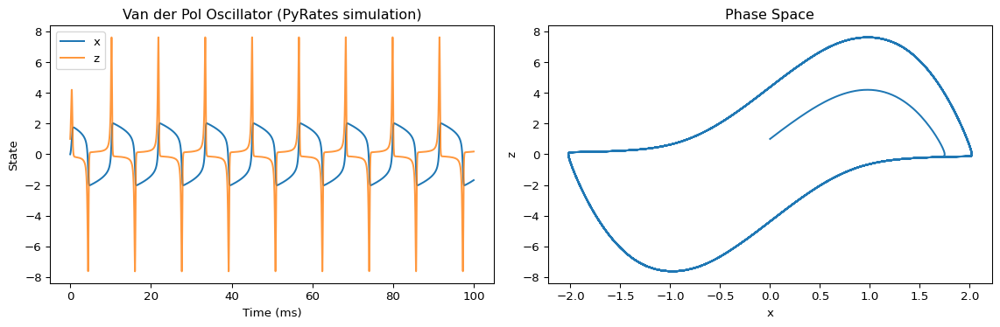

from tvbo import Dynamicsfrom IPython.display import Markdown, display# Create a Van der Pol oscillator model in TVBOvdp = Dynamics("Dynamics")vdp.name ="VanDerPol"vdp.description ="Van der Pol oscillator - a classical nonlinear oscillator"# Add parametersvdp.add_parameter("mu", value=5.0, description="Damping constant")# Add state variables with their differential equationsvdp.add_state_variable("x", equation="z", initial_value=0.0, description="Position")vdp.add_state_variable("z", equation="mu*(1 - x**2)*z - x", initial_value=1.0, description="Velocity")# Display model summary using generate_reportdisplay(Markdown(vdp.generate_report(format="markdown")))
/Users/leonmartin_bih/tools/tvbo/.venv/lib/python3.13/site-packages/requests/__init__.py:113: RequestsDependencyWarning: urllib3 (2.6.3) or chardet (6.0.0.post1)/charset_normalizer (3.4.4) doesn't match a supported version!
warnings.warn(
VanDerPol
Van der Pol oscillator - a classical nonlinear oscillator
State Equations
\[
\dot{x} = z
\]\[
\dot{z} = - x + \mu*z*\left(1 - x^{2}\right)
\]
Parameters
Parameter
Value
Unit
Description
\(\mu\)
5.0
N/A
Damping constant
Step 2: Export to PyRates and Simulate
import osimport shutilimport matplotlib.pyplot as pltfrom pyrates import CircuitTemplate, clear
# Export TVBO model to PyRates formatos.makedirs('_pyrates_vdp', exist_ok=True)withopen('_pyrates_vdp/__init__.py', 'w') as f: f.write('')pyrates_yaml = vdp.to_yaml(format="pyrates", filepath='_pyrates_vdp/vdp.yaml')# Display exported code using render_codeprint("=== Generated Python Code ===")print(vdp.render_code(format="python"))
=== Generated Python Code ===
import numpy as np
import scipy.special
def VanDerPol(
current_state,
t,
mu=5.0,
stimulus=False,
):
stim_t = stimulus(t) if stimulus else 0.0
# State variables
x = current_state[0]
z = current_state[1]
# Derivatives
dx_dt = z
dz_dt = -x + mu * z * (1 - x**2)
derivatives = np.array([dx_dt, dz_dt])
return derivatives
# Run in PyRatesT =100.0step_size =1e-2print("Running TVBO-exported model in PyRates...")model = CircuitTemplate.from_yaml('_pyrates_vdp.vdp.VanDerPol_circuit')results = model.run( step_size=step_size, simulation_time=T, outputs={'x': 'p/VanDerPol_op/x', 'z': 'p/VanDerPol_op/z'}, solver='scipy', method='RK45', vectorize=False, # Required for single-node circuits (PyRates bug))clear(model)shutil.rmtree('_pyrates_vdp')# Plot resultsfig, axes = plt.subplots(1, 2, figsize=(12, 4))axes[0].plot(results['x'], label='x')axes[0].plot(results['z'], label='z', alpha=0.8)axes[0].set_xlabel('Time (ms)')axes[0].set_ylabel('State')axes[0].set_title('Van der Pol Oscillator (PyRates simulation)')axes[0].legend()axes[1].plot(results['x'], results['z'])axes[1].set_xlabel('x')axes[1].set_ylabel('z')axes[1].set_title('Phase Space')plt.tight_layout()plt.show()
Running TVBO-exported model in PyRates...
Compilation Progress
--------------------
(1) Translating the circuit template into a networkx graph representation...
...finished.
(2) Preprocessing edge transmission operations...
...finished.
(3) Parsing the model equations into a compute graph...
...finished.
Model compilation was finished.
Simulation Progress
-------------------
(1) Generating the network run function...
(2) Processing output variables...
...finished.
(3) Running the simulation...
...finished after 0.022164166992297396s.

Step 3: Load Back into TVBO
import tempfilefrom IPython.display import Markdown, display# Save to file and reloadwith tempfile.TemporaryDirectory() as tmpdir: filepath = os.path.join(tmpdir, "vanderpol.yaml") vdp.to_yaml(format="pyrates", filepath=filepath)# Load back into TVBO loaded = Dynamics.from_pyrates(filepath)# Display loaded model using generate_reportprint("=== Loaded Model Report ===") display(Markdown(loaded.generate_report(format="markdown")))
=== Loaded Model Report ===
VanDerPol
Van der Pol oscillator - a classical nonlinear oscillator
State Equations
\[
\dot{x} = z
\]\[
\dot{z} = - x + \mu*z*\left(1 - x^{2}\right)
\]
Parameters
Parameter
Value
Unit
Description
\(\mu\)
5.0
N/A
None
Step 4: Run in TVBO
from tvbo import SimulationExperimentfrom IPython.display import Markdown, display# Run the loaded model in TVBOexp = SimulationExperiment( dynamics=loaded,)exp.integration.duration=100# Display experiment reportdisplay(Markdown(exp.generate_report(format="markdown")))result = exp.run().integration# Plot TVBO simulationfig, axes = plt.subplots(1, 2, figsize=(12, 4))time = result.timex = result.data[:, 0, 0]z = result.data[:, 1, 0]axes[0].plot(time, x, label="x")axes[0].plot(time, z, label="z", alpha=0.8)axes[0].set_xlabel("Time (ms)")axes[0].set_ylabel("State")axes[0].set_title("Van der Pol Oscillator (TVBO simulation)")axes[0].legend()axes[1].plot(x, z)axes[1].set_xlabel("x")axes[1].set_ylabel("z")axes[1].set_title("Phase Space")plt.tight_layout()plt.show()
Simulation Experiment
1. Brain Network
Regions: 1
Conduction velocity: 3.0 mm/ms
Coupling: Linear
Pre-synaptic:\(c_{\text{pre}} = x_{j}\)
Post-synaptic:\(c_{\text{post}} = b + a \cdot gx\)
Parameter
Value
Description
\(b\)
0.0
Shifts the base of the connection strength while maintaining the absolute difference between different values.
\(a\)
0.00390625
Linear scaling factor of the coupled (delayed) input.
2. Local Dynamics: VanDerPol
Van der Pol oscillator - a classical nonlinear oscillator. The model comprises 2 state variables.
2.1 State Equations
\[\dot{x} = z\]
\[\dot{z} = - x + \mu \cdot z \cdot \left(1 - x^{2}\right)\]
from tvbo import Dynamicsfrom IPython.display import Markdown, display# Load an existing PyRates model (Van der Pol oscillator from PyRates)import model_templatesvdp_pyrates_path = os.path.join(os.path.dirname(model_templates.__file__), "oscillators", "vanderpol.yaml")# Load into TVBO (loads the first operator)vdp_imported = Dynamics.from_pyrates(vdp_pyrates_path)# Display using generate_reportdisplay(Markdown(vdp_imported.generate_report(format="markdown")))
vdp
State Equations
\[
\dot{x} = z
\]\[
\dot{z} = inp - x + \mu*z*\left(1 - x^{2}\right)
\]
Parameters
Parameter
Value
Unit
Description
\(\mu\)
1.0
N/A
None
\(inp\)
0.0
N/A
None
Step 2: Modify in TVBO and Display Code
from IPython.display import Markdown, display# Modify parameter in TVBOvdp_imported.parameters['mu'].value =2.5# Change damping# Display the generated Python code using render_codeprint("=== Generated Python Code ===")print(vdp_imported.render_code(format="python"))
=== Generated Python Code ===
import numpy as np
import scipy.special
def vdp(
current_state,
t,
mu=2.5,
inp=0.0,
stimulus=False,
):
stim_t = stimulus(t) if stimulus else 0.0
# State variables
x = current_state[0]
z = current_state[1]
# Derivatives
dx_dt = z
dz_dt = inp - x + mu * z * (1 - x**2)
derivatives = np.array([dx_dt, dz_dt])
return derivatives
Step 3: Run in TVBO
from IPython.display import Markdown, display# Run the modified model in TVBOexp = SimulationExperiment( dynamics=vdp_imported,)exp.integration.duration=100# Display experiment configurationMarkdown(exp.generate_report(format="markdown"))
Simulation Experiment
1. Brain Network
Regions: 1
Conduction velocity: 3.0 mm/ms
Coupling: Linear
Pre-synaptic:\(c_{\text{pre}} = x_{j}\)
Post-synaptic:\(c_{\text{post}} = b + a \cdot gx\)
Parameter
Value
Description
\(b\)
0.0
Shifts the base of the connection strength while maintaining the absolute difference between different values.
\(a\)
0.00390625
Linear scaling factor of the coupled (delayed) input.
2. Local Dynamics: vdp
The model comprises 2 state variables.
2.1 State Equations
\[\dot{x} = z\]
\[\dot{z} = inp - x + \mu \cdot z \cdot \left(1 - x^{2}\right)\]
import tempfilewith tempfile.TemporaryDirectory() as tmpdir:# Export modified model back to PyRates filepath = os.path.join(tmpdir, "vdp_modified.yaml") vdp_imported.to_yaml(format="pyrates", filepath=filepath)# Display exported YAMLprint("=== Modified model exported to PyRates YAML ===")withopen(filepath, 'r') as f:print(f.read())